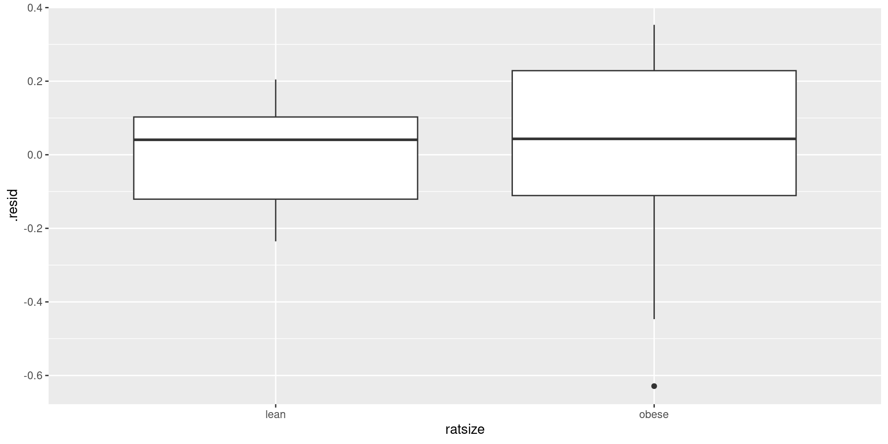

Analysis of variance revisited
Analysis of variance
Analysis of variance used with:
counted/measured response
categorical explanatory variable(s)
that is, data divided into groups, and see if response significantly different among groups
or, see whether knowing group membership helps to predict response.
Two stages
Typically two stages:
\(F\)-test to detect any differences among/due to groups
if \(F\)-test significant, do multiple comparisons to see which groups significantly different from which.
Need special multiple comparisons method because just doing (say) two-sample \(t\)-tests on each pair of groups gives too big a chance of finding “significant” differences by accident.
Packages
These:
Example: Pain threshold and hair colour
Do people with different hair colour have different abilities to deal with pain?
Men and women of various ages divided into 4 groups by hair colour: light and dark blond, light and dark brown.
Each subject given a pain sensitivity test resulting in pain threshold score: higher score is higher pain tolerance.
19 subjects altogether.
The data
In hairpain.txt:
hair pain
lightblond 62
lightblond 60
lightblond 71
lightblond 55
lightblond 48
darkblond 63
darkblond 57
darkblond 52
darkblond 41
darkblond 43lightbrown 42
lightbrown 50
lightbrown 41
lightbrown 37
darkbrown 32
darkbrown 39
darkbrown 51
darkbrown 30
darkbrown 35Summarizing the groups
my_url <- "http://ritsokiguess.site/datafiles/hairpain.txt"
hairpain <- read_delim(my_url, " ")
hairpain %>%
group_by(hair) %>%
summarize(
n = n(),
xbar = mean(pain),
s = sd(pain)
)Brown-haired people seem to have lower pain tolerance.
Boxplot

Assumptions
Data should be:
normally distributed within each group
same spread for each group
darkbrowngroup has upper outlier (suggests not normal)darkblondgroup has smaller IQR than other groups.But, groups small.
Shrug shoulders and continue for moment.
Testing equality of SDs
- via Levene’s test in package
car:
No evidence (at all) of difference among group SDs.
Possibly because groups small.
Analysis of variance
Df Sum Sq Mean Sq F value Pr(>F)
hair 3 1361 453.6 6.791 0.00411 **
Residuals 15 1002 66.8
---
Signif. codes: 0 '***' 0.001 '**' 0.01 '*' 0.05 '.' 0.1 ' ' 1P-value small: the mean pain tolerances for the four groups are not all the same.
Which groups differ from which, and how?
Multiple comparisons
Which groups differ from which? Multiple comparisons method. Lots.
Problem: by comparing all the groups with each other, doing many tests, have large chance to (possibly incorrectly) reject \(H_0:\) groups have equal means.
4 groups: 6 comparisons (1 vs 2, 1 vs 3, , 3 vs 4). 5 groups: 10 comparisons. Thus 6 (or 10) chances to make mistake.
Get “familywise error rate” of 0.05 (whatever), no matter how many comparisons you’re doing.
My favourite: Tukey, or “honestly significant differences”: how far apart might largest, smallest group means be (if actually no differences). Group means more different: significantly different.
Tukey
TukeyHSD:
Tukey multiple comparisons of means
95% family-wise confidence level
Fit: aov(formula = pain ~ hair, data = hairpain)
$hair
diff lwr upr p adj
darkbrown-darkblond -13.8 -28.696741 1.0967407 0.0740679
lightblond-darkblond 8.0 -6.896741 22.8967407 0.4355768
lightbrown-darkblond -8.7 -24.500380 7.1003795 0.4147283
lightblond-darkbrown 21.8 6.903259 36.6967407 0.0037079
lightbrown-darkbrown 5.1 -10.700380 20.9003795 0.7893211
lightbrown-lightblond -16.7 -32.500380 -0.8996205 0.0366467The old-fashioned way
List group means in order
Draw lines connecting groups that are not significantly different:
darkbrown lightbrown darkblond lightblond
37.4 42.5 51.2 59.2
-------------------------
---------------lightblondsignificantly higher than everything exceptdarkblond(at \(\alpha=0.05\)).darkblondin middle ground: not significantly less thanlightblond, not significantly greater thandarkbrownandlightbrown.More data might resolve this.
Looks as if blond-haired people do have higher pain tolerance, but not completely clear.
Some other multiple-comparison methods
Work any time you do \(k\) tests at once (not just ANOVA).
Bonferroni: multiply all P-values by \(k\).
Holm: multiply smallest P-value by \(k\), next-smallest by \(k-1\), etc.
False discovery rate: multiply smallest P-value by \(k/1\), 2nd-smallest by \(k/2\), , \(i\)-th smallest by \(k/i\).
Stop after non-rejection.
Example
P-values 0.005, 0.015, 0.03, 0.06 (4 tests all done at once) Use \(\alpha=0.05\).
Bonferroni:
Multiply all P-values by 4 (4 tests).
Reject only 1st null.
Holm:
Times smallest P-value by 4: \(0.005*4=0.020<0.05\), reject.
Times next smallest by 3: \(0.015*3=0.045<0.05\), reject.
Times next smallest by 2: \(0.03*2=0.06>0.05\), do not reject. Stop.
Continued
With P-values 0.005, 0.015, 0.03, 0.06:
False discovery rate:
Times smallest P-value by 4: \(0.005*4=0.02<0.05\): reject.
Times second smallest by \(4/2\): \(0.015*4/2=0.03<0.05\), reject.
Times third smallest by \(4/3\): \(0.03*4/3=0.04<0.05\), reject.
Times fourth smallest by \(4/4\): \(0.06*4/4=0.06>0.05\), do not reject. Stop.
pairwise.t.test
Pairwise comparisons using t tests with pooled SD
data: pain and hair
darkblond darkbrown lightblond
darkbrown 0.01748 - -
lightblond 0.14251 0.00075 -
lightbrown 0.13337 0.36695 0.00817
P value adjustment method: none
Pairwise comparisons using t tests with pooled SD
data: pain and hair
darkblond darkbrown lightblond
darkbrown 0.0699 - -
lightblond 0.4001 0.0045 -
lightbrown 0.4001 0.4001 0.0408
P value adjustment method: holm pairwise.t.test part 2
Pairwise comparisons using t tests with pooled SD
data: pain and hair
darkblond darkbrown lightblond
darkbrown 0.0350 - -
lightblond 0.1710 0.0045 -
lightbrown 0.1710 0.3670 0.0245
P value adjustment method: fdr
Pairwise comparisons using t tests with pooled SD
data: pain and hair
darkblond darkbrown lightblond
darkbrown 0.1049 - -
lightblond 0.8550 0.0045 -
lightbrown 0.8002 1.0000 0.0490
P value adjustment method: bonferroni Rats and vitamin B
What is the effect of dietary vitamin B on the kidney?
A number of rats were randomized to receive either a B-supplemented diet or a regular diet.
Desired to control for initial size of rats, so classified into size classes
leanandobese.After 20 weeks, rats’ kidneys weighed.
Variables:
Response:
kidneyweight(grams).Explanatory:
diet,ratsize.
Read in data:
The data
Grouped boxplot

What’s going on?
- Calculate group means:
Rat size: a large and consistent effect.
Diet: small/no effect (compare same rat size, different diet).
Effect of rat size same for each diet: no interaction.
ANOVA with interaction
Df Sum Sq Mean Sq F value Pr(>F)
ratsize 1 8.068 8.068 141.179 1.53e-11 ***
diet 1 0.012 0.012 0.218 0.645
ratsize:diet 1 0.036 0.036 0.638 0.432
Residuals 24 1.372 0.057
---
Signif. codes: 0 '***' 0.001 '**' 0.01 '*' 0.05 '.' 0.1 ' ' 1- Significance/nonsignificance as we expected.
- Note no significant interaction (can be removed).
Interaction plot
- Plot mean of response variable against one of the explanatory, using other one as groups. Start from
summary:
- For this, have to give both
groupandcolour.
The interaction plot

Lines basically parallel, indicating no interaction.
Take out interaction
Df Sum Sq Mean Sq F value Pr(>F)
ratsize 1 8.068 8.068 143.256 7.59e-12 ***
diet 1 0.012 0.012 0.221 0.643
Residuals 25 1.408 0.056
---
Signif. codes: 0 '***' 0.001 '**' 0.01 '*' 0.05 '.' 0.1 ' ' 1No Tukey for
diet: not significant.No Tukey for
ratsize: only two sizes, and already know that obese rats have larger kidneys than lean ones.Bottom line: diet has no effect on kidney size once you control for size of rat.
Assessing assumptions: residuals
- In two-way ANOVA, not many observations per treatment group.
- Difficult to check for normality / equal spreads.
- But, any regular ANOVA also a regression.
- Use regression residual ideas.
- In ANOVA, one fitted value per treatment group (based on means).
- Residual: observation minus fitted value.
Previous ANOVA as regression
Call:
lm(formula = kidneyweight ~ ratsize + diet, data = vitaminb)
Residuals:
Min 1Q Median 3Q Max
-0.62893 -0.12625 0.04071 0.14607 0.35321
Coefficients:
Estimate Std. Error t value Pr(>|t|)
(Intercept) 1.60536 0.07768 20.67 < 2e-16 ***
ratsizeobese 1.07357 0.08970 11.97 7.59e-12 ***
dietvitaminb -0.04214 0.08970 -0.47 0.643
---
Signif. codes: 0 '***' 0.001 '**' 0.01 '*' 0.05 '.' 0.1 ' ' 1
Residual standard error: 0.2373 on 25 degrees of freedom
Multiple R-squared: 0.8516, Adjusted R-squared: 0.8397
F-statistic: 71.74 on 2 and 25 DF, p-value: 4.39e-11Reproduce ANOVA
- ANOVA and regression
drop1output always the same. - this time, ANOVA and regression
summaryoutput have same P-values, but only because categorical variables both have two levels.
Are the residuals normal?

Residuals against fitted

Comments
- 2 rat sizes, 2 diets: only \(2 \times 2 = 4\) different fitted values
- larger fitted values have greater spread (fan-out, transformation?)
- add residuals to data to plot residuals against size, diet (
augmentfrombroom):
- explanatory
ratsize,dietcategorical, so plot resid vs. them with boxplots.
Residuals vs rat size
Residuals vs diet
Comments
- there are low outliers on the plot against diet
- residuals for obese rats seem more spread out than for lean rats
- case for transformation of rat weights
- however, story from our analysis very clear:
- rat size strongly significant
- diet nowhere near significant
- and so expect transformation to make no difference to conclusions.
The auto noise data
In 1973, the President of Texaco cited an automobile filter developed by Associated Octel Company as effective in reducing pollution. However, questions had been raised about the effects of filter silencing. He referred to the data included in the report (and below) as evidence that the silencing properties of the Octel filter were at least equal to those of standard silencers.
The data
Making boxplot
Make a boxplot, but have combinations of filter type and engine size.
Use grouped boxplot again, thus:
The boxplot
See difference in engine noise between Octel and standard is larger for medium engine size than for large or small.
Some evidence of differences in spreads (ignore for now):
ANOVA
Df Sum Sq Mean Sq F value Pr(>F)
size 2 26051 13026 199.119 < 2e-16 ***
type 1 1056 1056 16.146 0.000363 ***
size:type 2 804 402 6.146 0.005792 **
Residuals 30 1962 65
---
Signif. codes: 0 '***' 0.001 '**' 0.01 '*' 0.05 '.' 0.1 ' ' 1The interaction is significant, as we suspected from the boxplots.
The within-group spreads don’t look very equal, but only based on 6 obs each.
Tukey: ouch!
diff lwr upr p adj
M:Octel-L:Octel 51.6666667 37.463511 65.869823 6.033496e-11
S:Octel-L:Octel 52.5000000 38.296844 66.703156 4.089762e-11
L:Std-L:Octel 5.0000000 -9.203156 19.203156 8.890358e-01
M:Std-L:Octel 75.8333333 61.630177 90.036489 4.962697e-14
S:Std-L:Octel 55.8333333 41.630177 70.036489 9.002910e-12
S:Octel-M:Octel 0.8333333 -13.369823 15.036489 9.999720e-01
L:Std-M:Octel -46.6666667 -60.869823 -32.463511 6.766649e-10
M:Std-M:Octel 24.1666667 9.963511 38.369823 1.908995e-04
S:Std-M:Octel 4.1666667 -10.036489 18.369823 9.454142e-01
L:Std-S:Octel -47.5000000 -61.703156 -33.296844 4.477636e-10
M:Std-S:Octel 23.3333333 9.130177 37.536489 3.129974e-04
S:Std-S:Octel 3.3333333 -10.869823 17.536489 9.787622e-01
M:Std-L:Std 70.8333333 56.630177 85.036489 6.583623e-14
S:Std-L:Std 50.8333333 36.630177 65.036489 8.937329e-11
S:Std-M:Std -20.0000000 -34.203156 -5.796844 2.203265e-03Interaction plot
This time, don’t have summary of mean noise for each size-type combination.
One way is to compute summaries (means) first, and feed into
ggplotas in vitamin B example.Or, have
ggplotcompute them for us, thus:
Interaction plot
The lines are definitely not parallel, showing that the effect of type is different for medium-sized engines than for others:
If you don’t like that
then compute the means first, in a pipeline:

Simple effects for auto noise example
In auto noise example, weren’t interested in all comparisons between car size and filter type combinations.
Wanted to demonstrate (lack of) difference between filter types for each car type.
These are called simple effects of one variable (filter type) conditional on other variable (car type).
To do this, pull out just the data for small cars, compare noise for the two filter types. Then repeat for medium and large cars. (Three one-way ANOVAs.)
Do it using dplyr tools
- Small cars:
Df Sum Sq Mean Sq F value Pr(>F)
type 1 33.3 33.33 0.548 0.476
Residuals 10 608.3 60.83 No filter difference for small cars.
For Medium, change
StoMand repeat.
Simple effect of filter type for medium cars
Df Sum Sq Mean Sq F value Pr(>F)
type 1 1752.1 1752.1 68.93 8.49e-06 ***
Residuals 10 254.2 25.4
---
Signif. codes: 0 '***' 0.001 '**' 0.01 '*' 0.05 '.' 0.1 ' ' 1- There is an effect of filter type for medium cars. Look at means to investigate (over).
Mean noise for each filter type
for medium engine size:
- Octel filters produce less noise for medium cars.
Large cars
- Large cars:
Df Sum Sq Mean Sq F value Pr(>F)
type 1 75 75 0.682 0.428
Residuals 10 1100 110 - No significant difference again.
All at once, using split/apply/combine
The “split” part:
Now have three rows, with the data frame for each size encoded as one element of this data frame.
Apply
- Write function to do
aovon a data frame with columnsnoiseandtype, returning P-value:
- Test it:
- Check.
Combine
- Apply this function to each of the nested data frames (one per engine size):
Tidy up
- The
datacolumn was stepping-stone to getting answer. Don’t need it any more:
Simultaneous tests
- When testing simple effects, doing several tests at once. (In this case, 3.) Have to adjust P-values for this. Eg. Holm:
simple_effects %>% ungroup() %>% arrange(p_val) %>%
mutate(multiplier = 4 - row_number()) %>%
mutate(p_val_adj = p_val * multiplier)No change in rejection decisions.
Octel filters sig. better in terms of noise for medium cars, and not sig. different for other sizes.
Octel filters never significantly worse than standard ones.
Confidence intervals
Perhaps better way of assessing simple effects: look at confidence intervals rather than tests.
Gives us sense of accuracy of estimation, and thus whether non-significance might be lack of power: ``absence of evidence is not evidence of absence’’.
Works here because two filter types, using
t.testfor each engine type.Want to show that the Octel filter is equivalent to or better than the standard filter, in terms of engine noise.
Equivalence and noninferiority
Known as “equivalence testing” in medical world. A good read: link. Basic idea: decide on size of difference \(\delta\) that would be considered “equivalent”, and if CI entirely inside \(\pm \delta\), have evidence in favour of equivalence.
We really want to show that the Octel filters are “no worse” than the standard one: that is, equivalent or better than standard filters.
Such a “noninferiority test” done by checking that
upper limitof CI, new minus old, is less than \(\delta\). (This requires careful thinking about (i) which way around the difference is and (ii) whether a higher or lower value is better.)
CI for small cars
Same idea as for simple effect test:
CI for medium cars
CI for large cars
Or, all at once: split/apply/combine
Results
Procedure
Function to get CI of difference in noise means for types of filter on input data frame
Nest by
size(mini-dfdataper size)Calculate CI for each thing in
data: CI is two numbers longunnestcicolumn (wider) to see two numbers in each CI.
CIs and noninferiority test
Suppose we decide that a 20 dB difference would be considered equivalent. (I have no idea whether that is reasonable.)
Intervals:
Comments
In all cases, upper limit of CI is less than 20 dB. The Octel filters are “noninferior” to the standard ones.
Caution: we did 3 procedures at once again. The true confidence level is not 95%. (Won’t worry about that here.)
Contrasts in ANOVA
Sometimes, don’t want to compare all groups, only some of them.
Might be able to specify these comparisons ahead of time; other comparisons of no interest.
Wasteful to do ANOVA and Tukey.
Example: chainsaw kickback
From link.
Forest manager concerned about safety of chainsaws issued to field crew. 4 models of chainsaws, measure “kickback” (degrees of deflection) for 5 of each:
A B C D
-----------
42 28 57 29
17 50 45 29
24 44 48 22
39 32 41 34
43 61 54 30
- So far, standard 1-way ANOVA: what differences are there among models?
chainsaw kickback (2)
But: models A and D are designed to be used at home, while models B and C are industrial models.
Suggests these comparisons of interest:
home vs. industrial
the two home models A vs. D
the two industrial models B vs. C.
Don’t need to compare all the pairs of models.
What is a contrast?
Contrast is a linear combination of group means.
Notation: \(\mu_A\) for (population) mean of group \(A\), and so on.
In example, compare two home models: \(H_0: \mu_A-\mu_D=0\).
Compare two industrial models: \(H_0: \mu_B-\mu_C=0\).
Compare average of two home models vs. average of two industrial models: \(H_0: \frac{1}{2}(\mu_A+\mu_D)-{1\over 2}(\mu_B+\mu_C)=0\) or \(H_0: 0.5\mu_A-0.5\mu_B-0.5\mu_C+0.5\mu_D=0\).
Note that coefficients of contrasts add to 0, and right-hand side is 0.
Contrasts in R
- Comparing two home models A and D (\(\mu_A-\mu_D=0\)):
- Comparing two industrial models B and C (\(\mu_B-\mu_C=0\)):
- Comparing home average vs. industrial average (\(0.5\mu_A-0.5\mu_B-0.5\mu_C+0.5\mu_D=0\)):
Orthogonal contrasts
- What happens if we multiply the contrast coefficients one by one?
[1] 0 0 0 0[1] 0.5 0.0 0.0 -0.5[1] 0.0 -0.5 0.5 0.0- in each case, the results add up to zero. Such contrasts are called orthogonal.
Orthogonal contrasts (2)
- Compare these:
Not zero, so c1 and c2 are not orthogonal.
Orthogonal contrasts are much easier to deal with.
Can use non-orthogonal contrasts, but more trouble (beyond us).
Read in data
Tidying
Need all the kickbacks in one column:
Starting the analysis (2)
The proper data frame:
Setting up contrasts
ANOVA as if regression
Call:
lm(formula = kickback ~ model, data = chain)
Residuals:
Min 1Q Median 3Q Max
-16.00 -7.10 0.60 6.25 18.00
Coefficients:
Estimate Std. Error t value Pr(>|t|)
(Intercept) 38.450 2.179 17.649 6.52e-12 ***
modelc.home 2.100 3.081 0.682 0.50524
modelc.industrial -3.000 3.081 -0.974 0.34469
modelc.home.ind -15.100 4.357 -3.466 0.00319 **
---
Signif. codes: 0 '***' 0.001 '**' 0.01 '*' 0.05 '.' 0.1 ' ' 1
Residual standard error: 9.743 on 16 degrees of freedom
Multiple R-squared: 0.4562, Adjusted R-squared: 0.3542
F-statistic: 4.474 on 3 and 16 DF, p-value: 0.01833Conclusions
Two home models not sig. diff. (P-value 0.51)
Two industrial models not sig. diff. (P-value 0.34)
Home, industrial models are sig. diff. (P-value 0.0032).
Means by model
- The means:
Home models A & D have less kickback than industrial ones B & C.
Makes sense because industrial users should get training to cope with additional kickback.
Comments
P-values all adjusted upwards from “none”.
Required because 6 tests at once.
Highest P-values for Bonferroni: most “conservative”.
Prefer Tukey or FDR or Holm.
Tukey only applies to ANOVA, not to other cases of multiple testing.